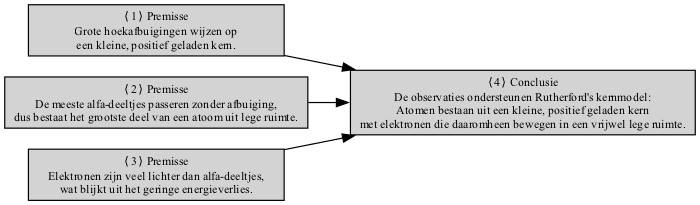

TIPS VOOR UITLEGVRAGEN
Table of Contents
1 Voorbeeld
| Uitlegvraag | Modelantwoord |
|---|---|
| (a) Verklaar het nucleaire model van een atoom dat werd voorgesteld door Rutherford na observaties gemaakt in het alpha-deeltjesverstrooiingsexperiment van Geiger en Marsden. (4 punten) | (a) Het atoom bestaat uit een kleine kern (✔) die het grootste deel van de massa (✔) van het atoom bevat. De kern is positief (✔). Elektronen draaien om de kern (✔). |
| (b) Leg uit waarom wanneer goudfolie wordt gebombardeerd met alfa-deeltjes: | |
| (i) Sommige alfa-deeltjes worden afgebogen door grote hoeken die groter zijn dan 90°. (3 punten) | (i) Een paar alfa-deeltjes komen dicht bij een kern (✔). Er is een afstotende kracht tussen het alfa-deeltje en de goudkern omdat ze beide positief geladen zijn (✔). Dit veroorzaakt de afbuiging van het alfa-deeltje. Omdat het alfa-deeltje veel minder massa heeft dan de goudkern, kan het door een grote hoek afwijken (✔). |
| (ii) De meeste alfa-deeltjes zonder afwijking doorgaan en weinig energie verliezen bij het passeren door de folie. (2 punten) | (ii) Slechts een paar alfa-deeltjes botsen met een kern, aangezien het grootste deel van de materie lege ruimte is, alleen bezet door elektronen (✔). De alfa-deeltjes wijken slechts een beetje af en verliezen zeer weinig energie omdat een elektron een zeer kleine massa heeft vergeleken met dat van een alfa-deeltje (✔). |

1.1 Tips voor uitlegvragen
| Tip | Uitleg | Toepassing op Voorbeeldvraag | Gegeven Antwoord & Hoe Het Past |
|---|---|---|---|
| Begrijp de Kernwoorden | Identificeer belangrijke kernwoorden zoals "Beschrijf", "Leg uit waarom", "Hoe". | Vraag 1 (a): "Beschrijf" - geef een gedetailleerde beschrijving van het nucleaire model. Vraag 1 (b): "Leg uit waarom" - geef redenen voor waargenomen fenomenen. | Het gegeven antwoord splitst beschrijving (a) en uitleg (b) correct op. |
| Let op de Puntentoewijzing | Besteed aandacht aan de punten die aan elk deel zijn toegewezen om de diepte van het antwoord te bepalen. | Vraag 1 (a) - 4 punten: Meerdere relevante punten zijn vereist. Vraag 1 (b) - (i) 3 punten, (ii) 2 punten: Het antwoord moet dienovereenkomstig worden gestructureerd. | Elk deel bevat voldoende punten om aan de puntentoewijzing te voldoen (✔). |
| Gebruik Relevante Terminologie | Gebruik wetenschappelijke termen nauwkeurig (bijv. kern, positief geladen, afstotende kracht). | Vraag 1 (a): Termen zoals "kern", "positief", "elektronen draaien". Vraag 1 (b): Termen zoals "afstotende kracht", "afbuiging", "lege ruimte". | Het gegeven antwoord gebruikt de juiste terminologie: "kern", "positief", "afstotende kracht", "afbuiging" (✔). |
| Leg Mechanismen Duidelijk Uit | Als wordt gevraagd "waarom" of "hoe", geef dan een logische stapsgewijze uitleg. | Vraag 1 (b)(i): Leg uit waarom alfa-deeltjes afbuigen (positief-positieve afstoting). Vraag 1 (b)(ii): Leg uit waarom de meeste ongehinderd passeren. | Het antwoord geeft een duidelijke stapsgewijze redenering over afstoting en waarom de meeste deeltjes passeren (✔). |
| Relateer Observaties aan Theorie | Verbind observaties met onderliggende principes of modellen. | Vraag 1 (b): Verbind alfa-deeltjesverstrooiing met Rutherford's model (kleine, dichte kern, meestal lege ruimte). | De uitleg verwijst direct naar Rutherford's model: positieve kern, meestal lege ruimte (✔). |
| Overweeg Alternatieve Uitspraken | Vermeld geldige alternatieve punten om alle mogelijkheden te dekken. | Vraag 1 (b)(ii): Vermeld de kleine massa van elektronen als een geldig punt. | Het antwoord noemt de kleine massa van elektronen (✔). |
| Gebruik Waar Mogelijk Opsommingen | Orden antwoorden duidelijk voor helderheid en structuur. | Het opsplitsen van punten maakt het antwoord duidelijker en beter leesbaar. | Het antwoord is gestructureerd in delen met duidelijke, beknopte punten (✔). |
| Verwijs naar Experimenteel Bewijs | Wanneer van toepassing, verwijs naar experimentele resultaten of bewijs. | Verwijs naar het alfa-deeltjesverstrooiingsexperiment om uitspraken te rechtvaardigen. | Het antwoord verwijst impliciet naar het experiment zonder het expliciet te noemen, maar impliceert de bevindingen (✔). |
| Herzie en Controleer | Zorg ervoor dat alle punten worden behandeld, vooral wanneer het om veel punten gaat. | Zorg ervoor dat er minstens vier verschillende punten worden gemaakt voor Vraag 1 (a), relevante punten voor Vraag 1 (b). | Het antwoord behandelt alle noodzakelijke punten om volledige punten te verdienen (✔). |
1.2 Samenvatting
Het gegeven antwoord volgt de tips effectief. Het:
- Behandelt alle delen van de vraag met relevante terminologie.
- Gebruikt gestructureerde punten voor betere duidelijkheid.
- Verbindt observaties direct met de door Rutherford voorgestelde theorie.